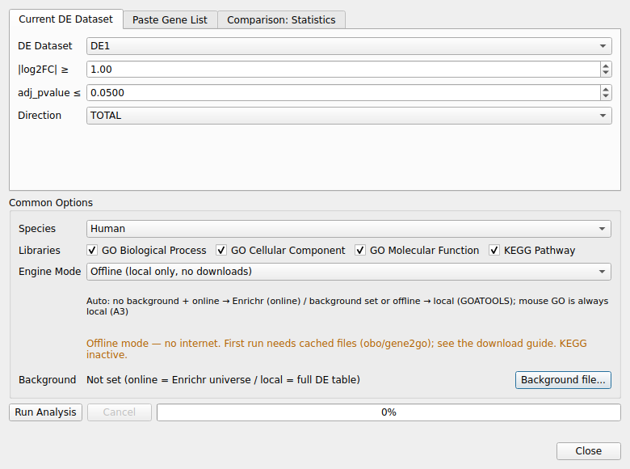

6. GO/KEGG Enrichment Analysis¶
Extracts DEGs from a loaded DE dataset (or a pasted gene list, or a Comparison: Statistics meta sheet) and runs on-the-fly GO (BP/CC/MF) and KEGG pathway enrichment.
- Prepare a DE dataset (or the current Comparison: Statistics sheet), then select Analysis → GO/KEGG Enrichment Analysis...
- Choose the input source tab (Current DE / Paste / Comparison), thresholds, species (Human/Mouse), libraries, and engine mode
- On completion an "Enrichment: …" Dataset is registered and can be reused in the existing Bar / Dot / Clustering / Network visualizations

Enrichment Analysis dialog with the Paste Gene List source selected.6.1 End-to-end workflow example (Acute 1D data)¶
A complete round trip with the bundled example data, from DE results to a published dot plot.
-
Load the DE result. Use File → Load Data... and pick
examples/Acute_1D_vs_Control_DA.parquet(already registered by the database auto-loader in most installs; you can also use any loaded DE dataset). -
Open the analysis dialog.
Analysis → GO/KEGG Enrichment Analysis...(enabled whenever a DE dataset is present). -
Choose the source and thresholds (Current DE tab):
- DE Dataset:
Acute 1D vs Control - |log2FC| ≥ 1.0, adj_pvalue ≤ 0.05, Direction: TOTAL only
- Species: Human (default); Libraries: GO BP/CC/MF + KEGG
The Direction dropdown has four choices: TOTAL only (all significant genes regardless of sign), UP, DOWN, or UP + DOWN + TOTAL (runs all three and merges them into a single dataset — use this to match the pipeline-import Excel format, which always has UP/DOWN/TOTAL sheets side by side). UP/DOWN/TOTAL-combined is only available for the Current DE Dataset source, since Paste/Comparison inputs are a flat gene list with no per-gene fold-change to split by direction.
- Engine mode — pick your context:
- Auto (recommended): online Enrichr when the network is available and no custom background is set; otherwise GOATOOLS local.
- Online: Enrichr for GO + KEGG (enrichr fixed universe is the background).
- Local / Offline: GOATOOLS with the full DE table as the population; KEGG is inactive offline (v1, ADR-1 Option 1).
-
A custom background file forces the local engine (ADR-2 2A).
-
Run. The progress bar advances through DEG extraction → mapping → enrichment → standardization. On success the dialog shows
Done: N terms (engine=...)and registersEnrichment: Acute 1D vs Controlunder GO_ANALYSIS. -
Visualize with the existing tools (the new dataset feeds the same pipeline as imported GO/KEGG results — identical standard columns and order):
- Visualization → GO/KEGG Dot Plot (or the other GO menus)
-
Terms carry a plain
gene_setvalue ofUP/DOWN/TOTAL(ontology is a separate column) — the same values pipeline-imported Excel sheets use, so the direction/ontology filters work identically either way. -
Export the result tab (Excel/CSV/Parquet) — the exported file includes the standard contract columns plus
_gene_set.
Interpretation note: online (Enrichr), local (GOATOOLS), and prerank engines use different statistical methods and backgrounds — numbers differ across modes by design; compare trends, not absolute p-values (engine-difference caveat, plan P3-4).
6.2 Meta-signature enrichment (Comparison: Statistics)¶
- Run Analysis → Compare Datasets with 2+ datasets; open the Comparison: Statistics tab.
- Open the enrichment dialog and switch to the Comparison: Statistics tab.
- Set the meta FDR cutoff (default 0.05); optionally require
meta_directionconcordant rows. - Choose the analysis method:
- ORA (over-representation) — meta-DEG → Enrichr/GOATOOLS ORA.
- GSEA prerank (gseapy, international gene sets) — meta ranking
(
meta_zor−log10(p) × sign(effect)) →gseapy.prerankagainst cached GMT snapshots (works offline). Results preserve NES / FWER columns. - The result registers as usual; metadata records
meta_combined_datasetsandgsea_method.
Name distinction (A7): GSEA Lite (Wilcoxon) in the Analysis menu is the built-in rank-based GSEA on predefined in-app gene sets; GSEA prerank (gseapy) above is the GO/KEGG enrichment pipeline's prerank path with international gene sets (GO/KEGG) and is a separate feature.
6.3 Engine modes (summary)¶
- Online (Enrichr): fastest, database-rich; sends only the DEG symbols; no custom background (2A forces local).
- Local (GOATOOLS): full offline-capable GO; uses the DE table as population; recommended for mouse (no online mouse GO library).
- Offline: no network; requires the cache (obo/gene2go) from any previous run; KEGG inactive.
- Auto: online when possible without a custom background, else local.
- Background file: custom gene list as population → local engine only.
6.4 Cache & reproducibility¶
- First run downloads
go-basic.obo,gene2go,gene_info, and GMT snapshots into the AppData cache (HTTPS_PROXYrespected, sha256-verified, TTL auto-refresh). - Every result's metadata keeps an
enrichment_recipe(serialized request) so the same analysis can be re-run or audited; auto re-run on load is a v1 non-goal — export the table for long-term storage.
Annotation snapshot pinning (reproducibility) — GO p-values depend on the
date of the gene2go/GMT annotation snapshot, so results shift when the cache
auto-refreshes (validated: pipeline vs current snapshot differ in term sizes M
and hit counts k, which shifts significance). For reproducible or
pipeline-comparable runs:
- Pin the snapshot:
CacheManager(..., pin_snapshots=True)— an existing cached file is then never TTL-refreshed; the same sha256 snapshot is reused. Delete the cache file to refresh explicitly. - Every result records the used snapshots under metadata
annotation_snapshots({kind: file, sha256, fetched_at, source}). - To match an older pipeline exactly, pin the same annotation version it used
(same-source
gene2godate or the pipeline GMT snapshot).
Statistic (one-sided vs two-sided) — Local GOATOOLS uses two-sided Fisher
by default (more conservative). The pipeline/clusterProfiler convention is
one-sided (enrichment) Fisher; on identical annotation counts the two agree
(ρ=1.000). To match pipeline p-values, enable “One-sided Fisher (enrichment,
matches pipeline statistics — local GO)” in the analysis dialog
(enrich_ora(..., one_sided=True)). The used statistic is recorded in metadata
stat_test (fisher_one_sided / fisher_two_sided).
See also: User Guide · FAQ